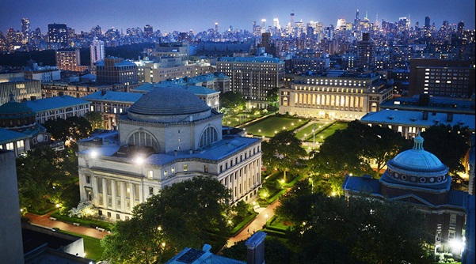
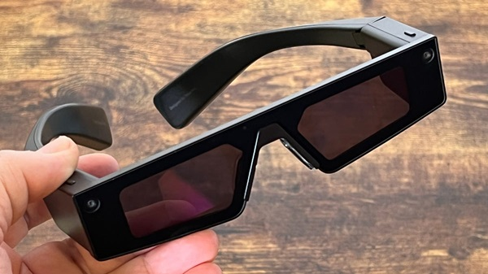
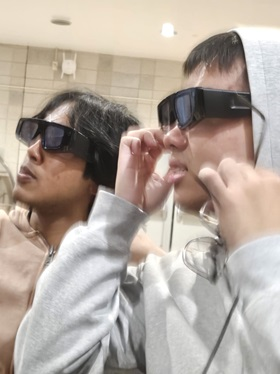

- Lens Studio
- Typescript
- Javascript
BMCC Facial Recognition ID Enterprise System
(B.F.R.I.E.S)
Visual Aid using SnapChat's Spectacles
Tools Used
DivHacks 2024
the hackathon
This project was done for DivHacks 2024. it was my second hackathon, and made for a really interesting experience. i dont really wanna trash talk the experience but i aint gon lie it was brutal. it started off pretty alright, the event opened a bit late (foreshadowing) and yasin ehsan (the GOAT) gave an opening speech. i was actually able to meet him after which was pretty cool, and we ended up connecting on linkedIn after (common yasin W).
originally we went in thinking of making a push up tracker/game with computer vision and making it a mobile app with flutter, but when we saw snapchat and their product come in we switched up real fast. more on that later though because the hackathon was just as good as it was bad. i think the thing that really affected the hackathon (and i hope the organizers learn from this in the future) was that everything was late. one thing was late and that pushes everything else back and that feedback loops, eventually desyncing literally everything making for a lesser overall experience. honestly they should have just cut their losses after the first or 2nd event and tried to get everything back on track, but they kept pushing back things which was ultamitely their downfall.
additionally columbia had extra security that weekend because of the oct7 protests. that was unfortunate and really out of their control so i cant hold em too hard for that. i also cant blame the school itself for that since the schools who didnt beef up their security got vandalized (ccny and baruch) its unfortunate but as a wise old sub-saharan african man once said, "it is what it is" the thing with the beefed up security is that we were trapped in the CS common lounge for a few* (the whole night) hours. we couldnt leave and were couped up in a small room with 100 other stinky CS majors. i bet you can smell that through the screen.
it sucked because there were open areas in the data science lounge, however we weren't allowed to go in or even venture around the building. we were trapped in the room the whole night and weren't allowed to leave which is kinda wild. literally prisoners :sob: if i were the organizers i honestly would have let everyone at the very least into the data sciecne room, even if it meant getting in trouble with the admin since the situation was a bit dire. luckily me and my friend were let out by the GOAT security guard who let us out the building to take a 20 min walk across the campus at 5:00am. beautiful campus, wont be coming back, no longer plan on transferring into.
the spectacle(s) (snapsight)
shifting to the actual hackathon and project we made... we originally planned to make a push up tracker app, however after we saw the snapchat sponsored track we kenw we had to try it. snapchat gave us these really cool AR glasses and honestly theyre super cool. we had been thinking of making glasses to assist the blind and use object detection to track walls/people/crosswalks for a different hackathon but we saw this as the perfect opportunity to capitalize on, so we did.
in order to execut our idea we had to learn LensStudio, which is sort of like Blender and an IDE combined. knowing blender i thought id be able to pick this up fast, however ive never scripted in blender so this was all new to me. despite that it was actually pretty cool both to use and work with the spectacles. while we struggled a fair amount we were able to get body tracking working and made it so that everytime someone gets close the spectacles send an audio cue telling the user that theres a person too clsoe. it was pretty janky but still cool to see and use. the only major complaint i have with this is that the spectacles are marketed as an entertainment product, and i think the snapchat team was mainly looking for something in that realm. we tried to market this as a way to diversify their core audience, but i think we may have just hit that stroke at the wrong moment. one of the questions we were asked by the judges was about the market, and while im sure it was just a question it made me think, and there defintely is a product similar to this. i just wish snapchat didn't almost require the product to be entertainment centred, which is the main reason i think we lost. we didnt gameify any aspect of it, which the winners of the category did.
moving forward/reflection
while we werent able to catch any W's this event im still glad i attended. while the event itself was very lacking in terms of organization and unfortunate in happenstance im still glad i went. event was like a 2/10 but the experience might have been closer to a 5, purely because i put myself out there. from the previous hackathon, the main thing i wish i did was talk to more people. im still somewhat shy, so im glad i was able to get out more and just talk to people. i managed to get about thirty linkedIn connections off the event, most of which came out of an hour span when me and a friend went around just talking to poeple at 5am. i think that was the most memorable thing about the event. our logic was that everyone was cooped up in this room coding for the entire day so if we just came up and talked there was like a 100% chance they were down to talk. and im so glad i did. :D
focusing more on the techincal side of things id really like to work with AR or just object detection more. i think theres so much room for innovation here and there are so many other ideas i want to try, so imma get to them eventually. i also plan on attending more hackathons, just because it was really fun attending the event and meeting new people.
Make sure to check it out! (Link to project)